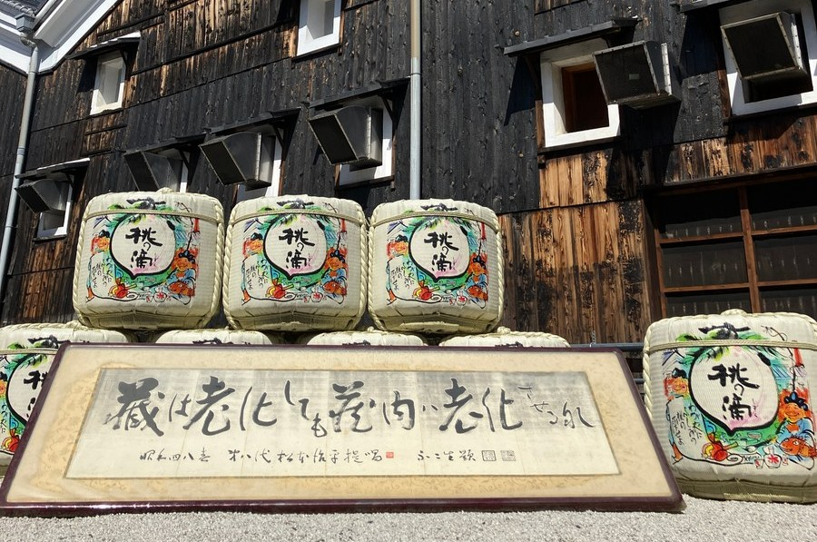

その一杯は執念か希望か。
気候変動から酒米の王・山田錦を守る生存戦略
３月、京都伏見の酒蔵開き。熱気の中、ある日本酒ファンが杜氏に「米不足や価格高騰など、酒米の調達は大丈夫ですか？ 高くても美味しいお酒を買いたい」と問いかけました。杜氏も「良い米なら高くても買う」と応じます。

しかし農業の現場が直面しているのは、経済的な問題を遥かに超える「気候変動との絶望的な戦い」です。いま、酒米の王様「山田錦」の足元で何が起きているのでしょうか。
1. 猛暑で崩壊する「山田錦」の神話
長年、山田錦は「どんなに削っても耐え、最高の酒質を出す」最高峰の酒米として君臨してきました。しかしこの神話には、「出穂直後が暑すぎず、後半に冷え込んで米が締まる」という気候の前提条件があります。
近年の異常な猛暑は、この前提を完全に破壊しました。出穂直後に35℃を超える猛暑が続くと、米の内部構造は脆いまま固定されてしまいます。蔵元がどれほど精米技術を駆使しても、この初期不良は修正できません。「削るほど欠点が露出する米」へと変貌しつつあるのが、偽らざる現状です。
2. 「100点」を捨てる勇気。農家が挑む4つの戦略
自然の猛威に対し、農業単体で「100点」を狙うことは不可能です。いま農家に求められているのは、「負け切らない生存戦略」です。
- 作期分散：「例年通り」を捨て、出穂時期をずらすことで猛暑の直撃を回避する。
- 冷却装置としての水管理：水は栄養補給ではなく、地温を下げるための最終手段として扱う。
- 乾燥までの一体管理：登熟期のダメージを防ぐため、刈り取りから乾燥までの「間」を極限まで管理する。
- 地域でのリスク分散：個人の農家ではなく、地域全体で全滅を防ぐ体制を構築する。
3. 水温を下げる「地下パイプライン」が最後の砦に
なかでも私たちが注目しているのが、地下埋設パイプによる給水と自動開閉水栓の導入です。一見すると単なる効率化ですが、これが山田錦を救う戦略兵器になり得ます。
地下パイプラインを通すことで、真夏の用水路の温水化を防ぎ、冷たい水を直接田んぼへ供給できます。水切れによる地温上昇も自動水栓で防ぐことで、極端な高温障害を回避し、「酒蔵から選ばれる品質」を残す確率を大幅に引き上げます。
4. 遺伝子94％を引き継ぐ「次世代・山田錦」への希望
さらに兵庫県では、猛暑に打ち勝つ強さを持ちながら、山田錦の遺伝子を94％引き継ぐ「次世代の酒米」の研究が急ピッチで進んでいます。
神戸新聞NEXT 高級酒米・山田錦「８６歳」温暖化の試練 収量減や品質低下…迫る限界 高級酒米・山田錦のブランドに危機が迫っている。自然環境の変化などに対して７０年以上、品質を維持した稲の種類はほとんどなく…しかし、遺伝子が近くても厳密には別の品種です。消費者や酒蔵に「これこそが未来の山田錦だ」と愛されるブランドへ育てるには、膨大な時間が必要です。私たちは今、その「ブランド確立までの時間を稼ぐ」ために、既存の山田錦をテクノロジーと執念で守り抜こうとしています。
5. 執念か、希望か。最高の一杯を未来へつなぐ
私たちのミッションは、既存の山田錦を守り抜いて時間を稼ぎつつ、新品種の栽培と酒造りを酒蔵と共にゼロから積み上げることです。まさに針の穴を通すような挑戦ですが、日本の宝である「最高の日本酒」を次世代へ繋ぐための唯一の道です。
次にあなたが手にするその一杯は、私たちが守り抜いた「執念」か、未来を切り拓く「94％の希望」か。どちらであれ、それは地域と伝統を守ろうとあがく人々が未来へつないだバトンなのです。
この挑戦の目撃者になりませんか？
とうじょうRMOでは、気候変動や担い手不足といった課題に対し、スマート農業やコミュニティの力で立ち向かっています。
私たちの活動の「いま」を、まずは公式LINEから覗いてみてください。